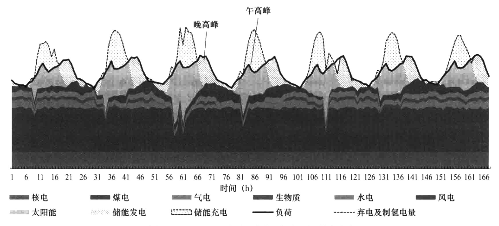
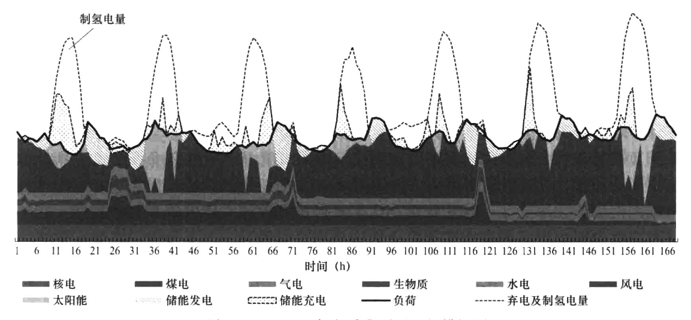

定了传统电源仍将继续发挥重要作用。
从 2030 年系统典型运行方式看，太阳能发电晚高峰出力基本为 0，风电出力有限，仍然需要主要依靠传统电源及储能满足晚高峰电力平衡需求。从新能源消纳角度看，由于新能源渗透率提高，储能调用非常频繁，主要在午间太阳能大发时段充电，晚高峰时段放电。2030 年冬季典型周运行模拟如图 31-1 所示。

图31-1 2030年冬季典型周运行模拟图
从远期2050和2060年规划系统典型运行方式看，水、核、气电、生物质发电和储能将成为满足电力平衡需求的主力电源，火电成为调节电源，需要进行较频繁的启停调峰。从新能源利用和消纳角度看，仅依赖储能等电力系统灵活性手段已经难以满足新能源消纳需求，将大量新能源电力用于制氢成为一种调节选项。2050年和2060年冬季典型周运行模拟分别如图31-2和图31-3所示。

图31-2 2050年冬季典型周运行模拟图
图31-3 2060年冬季典型周运行模拟图
31.1.2 “双碳”目标和新型电力系统建设对电力市场的新要求
当前我国电力资源配置正处于“计划向市场转型期”，电力系统处于“传统向新型电力系统过渡期”，经济社会正处于“新发展格局构建期”。
计划向市场转型期：计划与市场“双轨制”并存，并逐步向市场化转换。
传统向新型电力系统过渡期：新能源将逐步在电力系统中占据主导地位，电力系统面临高比例新能源接入下的强不确定性和脆弱性问题。
新发展格局构建期：推动需求侧的用能革命，降低能源当量密度，同时尽量保持较低的电价水平，维持工业产品的低成本国际竞争优势，有力支撑经济高质量发展。
“三期叠加”为新形势下的电力市场建设带来前所未有的机遇与挑战，大致包括以下几个方面。
（1）电力生产结构发生变化，要求通过市场化手段依托大电网和微电网促进新能源消纳。“双碳”目标下电力生产结构将发生重大变化，预计新能源将在2035年前后成为电源装机主体（占比超过50%），2050年前后成为电量供应主体（占比超过50%）。我国80%的风能和90%的太阳能资源分布在西部、北部地区，东中部相对匮乏，新能源资源与负荷中心逆向分布。当前我国新能源发电以大规模集中开发为主，大规模跨区跨省消纳仍存在许多障碍。随着分布式电源的大力发展，近期东中部新能源就地开发消纳将会提速，中东部负荷基数大、消纳能力强，海上风电、分布式光伏就近接入负荷中心，新能源发展速度高于西部、北部地区。随着东中部风电和太阳能资源基本开发完毕，远期开发重心将重回西部、北部地区。这些特点决定了要促进新能源高速发展和高效利用，必须采用能源富集地区集中式开发与负荷集中地区分布式建设同步快速推进的格局，需要通过合理的市场机制设计，依托大电网互济能力实现能源基地新能源大范围优化配置，同时增进微电网灵活调节能力实现分布式新能源就地消纳，提升整个电网新能源消纳能力。
（2）电网运行更加复杂，要求建立更可靠的电力供应保障市场机制。随着风电、光伏装机高速增长，电网运行特性显著变化、电力电量平衡更加复杂，给电网运行和安全保障带来极大挑战。一方面，新型电力系统具有“三高双峰”（高比例新能源、高比例电力
电子装备、用能高自主性，夏季用电高峰、冬季用电高峰）的运行特征，对安全可控带来前所未有的挑战；另一方面，由于市场机制的不完善，造成煤电等常规发电资源成本回收难，影响了投资建设的积极性，电网长期有效容量难以满足日益增长的用电需求，严重影响的电网运行的长期安全性。因此，碳达峰碳中和目标下的电力市场建设必须统筹考虑实现电力可靠供应和促进新能源发展需求，科学、系统设计市场运营机制和应急保障措施，通过市场化手段促进电力供需平衡、引导发电合理投资、保障系统长期有效容量充裕度，充分发挥大范围电力市场余缺互济和优势互补作用，确保电网安全稳定运行和可靠供电。
（3）各类电源功能定位变化，要求建立全形态的市场体系和成本疏导机制。随着“减碳”任务的深入推进、新能源迅猛发展，各类电源在电力系统中的功能定位将出现调整。煤电利用小时数不断下降，逐步从电力电量供应主体转为调节资源供应主体，为电网提供调峰电力和容量支撑以及转动惯量、应急备用等辅助服务。天然气发电将成为重要的灵活调节电源。抽水蓄能电站将承担调峰、调频、调压、系统备用和黑启动等多种功能。各类电源功能定位的变化造成电力商品价值的进一步细化和差异化，需要通过多样的交易品种，反映不同的价值属性。在电能交易品种之外，通过容量成本回收机制，反映电能商品的容量价值，保障充足的发电投资；通过辅助服务市场反映电能商品的安全稳定的支撑价值，补偿灵活调节资源的收入。要加强电能量市场、容量市场和辅助服务市场的统筹协调，实现电能商品电能量价值、容量价值、辅助服务价值三者协调。同时，在市场建设过程中，应做好相关价格形成与传导机制的设计，按照“谁受益、谁承担”的原则，将有关成本在市场主体中公平、合理分摊。
（4）系统灵活调节需求增大，要求通过市场充分激发用两侧灵活调节潜力。随着新能源装机比例不断提高，出力波动幅值不断增加，对系统调频、调峰资源的需求将大幅增加。预计2025年国家电网新能源日内波动最高可达300GW，接近华东电网最大负荷。现有以煤电为主体的电力装机结构难以满足新能源高速发展对系统灵活调节资源的要求，需要通过合理构建电力市场机制，引导发用双侧灵活互动，充分挖掘全网消纳空间。在发电侧，发挥市场机制的引导作用，鼓励燃煤火电机组开展灵活性改造，发挥抽水蓄能电站和调峰气电作用，推广应用大规模储能装置，结合电力现货市场，优化辅助服务的机制设计，同时创新转动惯量、爬坡等新型辅助服务机制设计，以保障高比例新能源电力系统的安全稳定运行。在用户侧，需要培养电力用户主动参与市场的意识，发挥电力市场价格对电能消费的引导作用，改善用户用能习惯，扩大需求侧响应规模，通过激励措施挖掘用户侧需求响应能力，以更好地发挥电网的资源配置平台作用，引导储能、电动汽车、柔性负荷等主体广泛参与和友好互动，实现能源互联网价值创造与共享，引导发用两侧灵活互动。
（5）新能源成为市场主体，要求更加精细的市场机制设计。随着新能源发电成本降低和出力预测等关键技术的进步，新能源市场属性不断增强，应当积极推动新能源逐步成为合格市场主体，合理确定并逐步降低新能源保障利用小时数，不断提高市场消纳比例为适应新能源间歇性、难预测的特点和需要大范围配置的实际，电力现货市场需要向更精细的时间维度和更精确的空间颗粒度发展，因此要求加快建立适应新能源发电特性的
交易组织方式，推进电力交易向更短周期延伸、向更细时段进化，增加交易频次，缩短交易周期，同时优化辅助服务市场机制设计，满足市场主体灵活调整的需求。针对日前市场，考虑新能源在时间上存在的突变性和不确定性，要求建立以保障新能源消纳为主要目标的交易调整机制，在实时运行中为新能源发电留足消纳空间，同时允许新能源根据功率预测精度在日前、实时市场中灵活调整报价策略。
31.2 培育电力市场助力能源转型的国际经验
国际能源电力行业绿色低碳转型进程加速，各国通过利用各种先进技术，推动能源系统实现从高碳向低碳、从以传统化石能源为主导向以新能源和可再生能源为主导转变。如何通过体制机制创新提升电力市场的适应性、灵活性和包容性、促进清洁能源的大范围消纳和高效利用、确保电力的安全可持续供应，已经成为世界各国普遍关注的焦点。分析国外电力市场最新发展趋势，具有重要的启示和借鉴意义。
31.2.1 国外电力市场助力能源转型的典型做法
（1）适应能源转型需求，致力于构建更具包容性和灵活性、促进绿色低碳发展的市场体制机制。各国充分考虑新能源和灵活性调节资源的特点，进一步完善电力市场的机制设计和相关规则。2019年12月11日，欧盟委员会提出《欧洲绿色协议》，强调欧洲电力市场需要实现集成化、互联化、数字化，以提供清洁、低价、安全的能源为目标不断优化机制设计。2020年12月，英国发布《能源白皮书》指出，未来英国将加速推动电、气、热等多种能源形式的综合优化高效利用，并建立更加灵活的市场机制和高效的管理体系，提出将从建立并完善灵活性资源市场、深入推进容量市场改革、在输配电价监管中兼顾低碳发展投资等三个方面进一步推动英国电力市场建设。2019年6月7日，日本提出2019版《能源白皮书》，提出要致力于推动新能源成为主力电源。2019年9月，CAISO为美国西部八州的新能源建立日前市场，公用事业公司可通过更有效的机组组合和更大范围的资源整合促进新能源的消纳。
（2）面对能源转型背景下电力供应保障和系统调节难题，需通过市场机制创新保障电力可靠供应和电网安全稳定运行。全球能源转型背景下，受能源结构变化、一次能源供应紧张、极端天气、新冠疫情等因素影响，电网安全运行和可靠供应面临极大挑战，多个国家出现供应短缺、电价上涨，对经济社会发展和民生保障带来不利影响。2021年初美国得州爆发寒潮，供需出现极端不平衡，得州批发电价一度突破了9000美元/MWh，与平日电价相比增长近400倍。2020年12月15日到2021年1月17日，由于天气寒冷，电力需求超出预期，且作为发电燃料的液化天然气（LNG）库存减少，日本各地电力供给持续紧张。多地出现大规模停电，数万户家庭无电可用，批发市场价格最高达到154.57日元/kWh，连日创出2005年市场启动后的最高价，达到1个月前价格的25倍。2021年下半年以来，全球能源价格持续攀升、供需形势紧张，天然气、动力煤价格创历史新高，石油价格涨至疫情暴发后高位，多个国家电价快速上涨。英国油荒、欧盟气荒、美国石
油和电力供给吃紧，印度、巴西、黎巴嫩等国出现断电，我国也发生拉闸限电情况。2021年11月，受天然气价格、碳价上升叠加影响，欧洲多地电价涨幅超200%。2022年6月，受国际一次能源市场价格持续走高和供需紧张影响，澳大利亚国家电力市场价格出现大幅攀升，电力现货市场价格触发了二次限价后，澳大利亚能源市场运营中心于6月15日宣布暂停电力现货市场运营。2022年7月，受持续高温和供应紧张影响，英国电力市场价格飙升至9724.54英镑/MWh，较2022年1~3月的电力市场平均价格上涨45倍。
（3）充分调动需求侧资源，建立完善需求侧资源参与市场交易的机制，为市场和系统运行提供更多灵活的调节手段。随着新能源的大规模发展，各国都意识到鼓励需求侧参与市场，充分利用需求侧资源是应对波动性电源、调节供需的重要手段之一。同时，分布式电源和储能技术的发展为需求侧资源参与市场提供了必要的技术支撑。2019年5月加州公共事业委员会公布了关于需求响应和电池储能的两项提案，旨在充分发挥需求响应和电池储能在电网中的作用。2020年9月，美国联邦能源监管委员会（FERC）颁布第2222号法令，允许分布式能源（DER）聚合商在区域性批发电力市场中参与竞争，要求独立系统运营商（ISO）和区域输电组织（RTO）必须修改其费率，从而将DER确立为市场参与者。2019年10月，澳大利亚能源市场委员会向澳大利亚政府理事会提出了引入节点定价和输电权交易的市场设计方案。该方案旨在提高储能运营商、发电商的市场收益，并通过价格信号引导其合理选择投资地点。2020年6月，澳大利亚能源市场委员会（AEMC）批准通过了澳大利亚批发市场需求侧响应规则，允许大用户初期以需求侧响应的形式参与NEM电力现货市场，提升电力系统运行灵活性。
（4）市场范围不断扩大，充分发挥地区间能源资源与负荷差异互补优势，提高新能源消纳水平。为更好地促进新能源发展、增加能源供应多样性、保障能源安全，世界很多国家跨区跨国大范围资源配置需求更加突出，电力市场交易范围持续扩大。欧盟已陆续实现多国、多区域市场的联合交易，基于统一市场核心规则、实现联合出清的市场机制正在逐步建立，日前市场联合出清覆盖27个成员国、80%以上用电量。2020年2月，英国商业、能源与产业战略部承诺将对容量市场的设计进行多项改进，允许跨境容量参与容量市场。英国于2021年1月脱离欧盟统一电力市场，2021年9月以来出于提高系统灵活性和可靠性、降低脱碳成本等考虑，开始探讨重新加入日前联合出清。为进一步促进跨区电力交易，日本建立了跨区联络线输电权市场，并提出建设全国平衡市场。
（5）不断优化完善容量市场（容量补偿机制）设计，保证高比例新能源下的电力长期安全可靠供应。随着新能源的高比例接入，常规燃煤和燃气发电机组利用率下降导致收益减少。与此同时，由于新能源出力波动性、间歇性影响，未来电力系统中仍然需要常规能源机组承担调峰等灵活调节责任。电力市场需要通过合理的容量机制设计，支撑新建常规发电容量所需的投资，确保系统的可靠性和充裕度。日本提出在2021年启动容量市场。2019年8月，美国NYISO表示为了完善容量市场、电能量市场等，计划开展15项电力市场机制改革。
（6）不断加大输配电网投资力度、完善规划和管理机制，为电力市场建设提供坚强的物理基础。电网基础设施建设是保证电力市场高效有序运作和资源大范围优化配置的基础。近年来，各国均不断加快输配电网投资建设力度，加强电网规划协调和建设管理，
完善电网投资机制，推动电网转型升级。欧盟指出到2030年之前将投资1500亿欧元进行泛欧洲电网的基础设施建设，重点支持200个传输和存储项目，未来重点加强十大互联电网断面的建设，预计到2030年欧洲的跨国互联容量将比2016年翻一番。英国开始实施“统一输电网规划监管机制”(ITPR)，主要目的是加强英国输电网规划和建设的协调管理，同时英国政府正在探索在输电线路建设方面引入竞争机制，以实现推动电网转型升级、激励技术创新、节约成本和扩展资金来源等目的。印度政府正在实施“整合电力发展计划（IPDS）”，总投资为3261.2亿卢比，旨在通过中央政府的资助和督导，解决地方城镇配网中电能供应不稳定、配电企业亏损严重等问题，提升用户用电质量，提高配电企业的管理水平与经济效益。
31.2.2 国外电力市场助力能源转型的实践经验
（1）根据本地区的电网运行特性、市场基础、配套措施等特点和能源转型中面临的实际问题，因地制宜地选择和调整市场结构、交易方式、交易品种、交易定价机制等技术细节。不同国家或地区在电力批发市场的技术细节有着很多差异。这些差异有些来源其电网运行特性，如PJM等市场（阻塞较频繁、复杂）通过节点边际电价来管理阻塞，而英国市场（阻塞相对较少）则通过实时平衡机制来处理阻塞。有些差异来源于电力工业发展历史，如PJM在建立市场前就是统一经济调度的电力库，因此批发市场也选择了全电量集中优化的模式。但没有一个市场的形态是一成不变的，各个市场都随着建设发展中遇到的问题和能源转型的需要，不断调整、完善和创新，如ERCOT市场由于其阻塞管理等问题从区域定价发展为节点边际电价，英国市场因为市场力等问题由电力库模式（pool）转型为NETA模式，欧洲平衡市场与辅助服务市场的融合，美国CAISO等市场爬坡、转动惯量市场的建立等。我国电力市场建设的起点处于“三期叠加”的特殊时期，因此，在电力现货市场设计和建设过程中，试点区域应根据本地区的特点和实际问题，因地制宜、科学合理选择电力市场模式，确保市场模式有良好的开放性、兼容性和可扩展性。同时，充分考虑市场要素在全国范围内优化配置的需要，省市场规则设计应在市场主体注册、电价机制、交易平台技术标准等方面加强协同，并注重规范省间交易与省内交易的时序衔接、接口标准等，做好省间省内市场的衔接协调。
（2）进一步健全电力市场体系，理顺价格机制，发挥市场价格信号对资源配置的引导作用。国外成熟电力市场均建立了较为完备的电力市场体系。我国需要加快推进包含中长期、现货、辅助服务、容量市场等在内的全形态电力市场建设，形成反映不同类型电源价值的完整价格体系。充分发挥中长期交易“压舱石”的作用；通过电力现货市场进行灵活调整，反映电能量的分时价值；通过辅助服务市场充分体现调节资源在电力系统中的价值；通过容量成本补偿机制、容量市场、稀缺定价等方式，保障优质火电企业可持续发展和系统发电容量充裕度。在市场设计中，应合理确定市场限价，充分体现发电侧投资激励、市场的电能价值和市场运行风险防范等因素，并根据外部环境变化动态调整。
（3）加快建设促进大范围资源优化配置的全国电力市场，服务我国新发展格局构建和
碳达峰碳中和目标需要。从国外经验来看，建设大范围资源优化配置的电力市场是普遍的发展趋势。美国西部能量不平衡市场（Western EIM）不断吸纳新成员、扩大市场范围，为北美西部地区的清洁能源提供消纳空间。欧盟持续推进统一电力市场建设，已形成日前和日内跨境统一市场。我国能源供需逆向分布、地区间能源资源禀赋、经济发展水平差异显著、清洁能源迅猛发展等特点，决定了必须在全国范围统筹能源配置，这是服务我国“构建国内国际双循环相互促进的新发展格局”、实现碳达峰碳中和的战略之举。建设全国电力市场是我国未来必然的发展趋势，但对于全国电力市场的建设路径尚未形成统一方案，需要进一步开展前瞻性研究，完善中长期市场与电力现货市场衔接、省间市场与省内市场衔接、计划电量与市场电量衔接的具体机制，对未来省内与省间市场融合发展提供顶层设计，为打破省间壁垒、提升能源资源配置效率创造条件。
（4）高度重视能源安全问题，坚定发挥“三统一”制度优势，做好与现有的电网运行管理体系和安全管理措施的衔接协调，确保电力安全可靠供应。能源是国民经济发展的重要支撑，能源安全直接影响到国家安全、可持续发展以及社会稳定。在全球政治经济格局和能源地缘政治态势大变动，以及新冠疫情蔓延的大背景下，国际油市的大动荡再次给中国能源安全敲响了“警钟”。从行业来看，电力安全已成为国家安全的重要组成部分。近期，受极端天气引起供需失衡、电网分散发展、分散管理、电力基础设施滞后等因素影响，美国加州、得州大面积停电事故频发，引起全世界广泛关注。我国在推进电力改革发展中，必须始终把保障电力安全放在首位，对经济性、环保性、便捷性的追求必须建立在安全可靠供电的前提下。结合国情，建议电力市场的推进要坚定发挥电网统一规划、统一调度、统一管理的制度优势，与现有的电网运行管理体系和安全管理措施做好衔接，重点研究解决好高比例新能源接入背景下电力系统的安全稳定运行问题，做好电力市场应急预案和风险管控，给予市场运营机构充分的市场紧急处置权限。通过市场机制保障电能生产、输送和使用动态平衡，充分发挥大电网平衡保障、资源互济等效益，确保各地电力可靠供应，满足经济社会发展需要。
（5）明确政府与市场的定位与边界，科学实施电力监管，实现市场的公平竞争。在电力市场化改革中，构建科学的监管体系对弥补市场失灵、防止垄断企业滥用市场力、促进电网企业效率提升等方面发挥了重要作用。近年来，各国电力监管机构不断加强监管力度、改进监管方式，以保障市场公平竞争，促进电网合理投资，维护用户利益。进一步明确政府与市场的定位，实施科学的电力监管是我国新一轮电力体制改革重点任务之一，也是国家治理现代化的内在要求。随着电力市场化改革的推进，市场机制这个“看不见的手”和政府监管这个“看得见的手”需要相互补充、相互协调、相互促进、动态调整。我国需要进一步转变政府职能，完善电力监管组织体系，创新监管措施和手段，重点针对电力市场竞争情况、市场环境下电力交易、调度、供电服务和安全，以及电网公平接入、电网投资行为、成本及投资运营效率等方面加强监管，切实保障新能源并网接入，促进节能减排，保障居民供电和电网安全可靠运行。
（6）将互联网思维与传统电力市场深度融合，适应未来多元化电力市场主体广泛接入的需求。随着人工智能、区块链、边缘计算等技术的进步，以及分布式光伏、储能、电动汽车等分布式能源的发展，虚拟电厂、负荷聚集商等新兴市场主体应运而生。新兴市
场主体具有极强的灵活性和可拓展性，能够显著提高系统运行的灵活性和经济性，对电力系统运行产生的影响日益显著。从国外经验来看，美国、欧洲等正在积极倡导将储能、需求侧响应等新兴市场主体整合到电力批发市场，充分发挥灵活资源特点，推动能源清洁低碳转型。为此，我国电力市场建设应充分考虑新兴电力市场主体的特点，通过合理的市场机制和商业模式设计，结合区块链、虚拟电厂等先进技术，引导新兴主体积极参与电力市场，有效激发市场主体活力，促进源网荷储良好互动，有效保障电网实时供需平衡，提升电力系统整体效率和效益。
31.3 未来电力市场多维度发展趋势探析
对于未来与新型电力系统相对应电力市场将以何形态出现，存在两种不同的认识，一种是未知的全新的电力市场理论、模型和商业模式；另一种是在既有电力市场理论与模型的框架内的修补与完善。鉴于对未来市场形态的有限认识，多数对电力市场新趋势的研究，仍选择第二种方案。基于1.1节所提出的电力市场总体架构，为助力实现“双碳”目标和构建新型电力系统，电力市场可以在时间、空间、客体三个维度上寻求进一步发展创新，以充分适应“双碳”目标和新型电力系统带来的各项挑战、助力能源转型。
31.3.1 时间维度发展创新
从时间维度来看，我国已初步形成覆盖多年、年度、月度、月内的中长期交易及日前、日内、实时的电力现货交易，电力中长期交易与电力现货市场的衔接机制已初步理顺，电力中长期交易有效发挥了“压舱石”作用，为市场主体稳定预期、规避风险提供了有效手段。
随着“双碳”目标下新能源的快速发展和新兴市场主体在新型电力系统中的不断涌现，电力中长期交易机制亟待进一步创新突破，与电力现货市场的衔接方式也有待进一步完善，未来可重点从三方面加强探索。
（1）适应新能源特性，提高中长期交易频次和灵活性。在年度、月度中长期交易的基础上，按需开展月内、多日的中长期交易，具备条件的地区可探索开展连续分时段中长期交易。同时结合新能源特性，创新中长期交易品种，有序推进中长期交易标准化建设，提高中长期交易合同的流动性和灵活性，并同步建立中长期转让、回购、置换等多种交易机制，给与市场主体更大的灵活调整空间。
（2）完善多年、年度电力中长期交易机制，进一步发挥中长期交易的风险规避作用。针对大型用电主体、新能源企业对长期稳定交易关系的需求，完善多年、年度中长期交易机制。鼓励电力用户与在建新能源企业签订5~25年的长期购电协议，在协议中约定购电价格、电力曲线或曲线分解方式，建立促进新能源发展的长效机制。为充分发挥中长期合同稳定供需的功能，可对发用两侧设置相关中长期电量比例的约束限制。将新能源保障性收购电量，视同政府授权合约，做好与市场交易的衔接。
（3）持续推动新能源参与中长期、现货交易，发挥市场机制对新能源消纳的促进作用。
在中长期阶段，对于市场化中长期合约，需明确相应曲线。由于新能源具有间歇性、波动性特点，针对其在签订带曲线合约时存在劣势问题，可自主选择与火电、水电、储能等打捆签订中长期合同，通过互补方式形成稳定曲线，增强其签约曲线适应性。同时打捆签订后，平均电能量成本降低，增强了二者在中长期市场的综合竞争力。对于非市场化中长期合约（即保障利用小时数内电量），应事先明确曲线分解方法。当政府核定的新能源保障利用小时数较高而无法完成时，应进行动态调节或在次年进行滚动。新能源中长期合约总曲线由市场化中长期曲线和新能源“以用定发”确定的分解曲线叠加而成。在现货阶段，新能源市场主体可选择通过“报量不报价”“报量报价”方式参与市场，鼓励新能源申报日前发电预测曲线。对于新能源消纳问题不突出的地区，可采用“报量不报价”方式参与市场，确保其全额消纳。同时，为激励新能源发电企业提高出力预测水平，可加大预测偏差考核力度，鼓励新能源发电企业合理开展市场申报。对于新能源消纳困难的地区，可采用日前、实时“报量报价”方式参与市场，确保其优先消纳。
31.3.2 空间维度发展创新
从空间维度来看，我国已初步形成涵盖省间、省内的电力市场交易体系，由于我国资源禀赋差异，需要通过建设全国统一电力市场，实现能源资源大范围、高效配置。根据118号文对全国统一电力市场体系的总体设计，省（区、市）市场在全国统一电力市场体系中具有基础作用，旨在提高省域内电力资源配置效率，保障地方电力基本平衡；区域市场则贯彻京津冀协同发展、长三角一体化、粤港澳大湾区建设等国家区域重大战略，开展跨省跨区电力中长期交易和调频、备用等辅助服务交易，优化区域电力资源配置；国家市场则定位于跨区域电力资源优化配置，是资源配置型市场。在空间发展与融合路径上，国家市场、省（区、市）/区域电力市场等不同层次市场需要相互耦合、有序衔接，条件成熟时支持省（区、市）市场与国家市场融合发展，或多省（区、市）联合形成区域市场后再与国家市场融合发展。有专家将新型电力系统建设分为传统电力系统转型期、新型电力系统形成期和新型电力系统成熟期三个阶段，参照此划分方式也可将“双碳”目标下全国统一电力市场体系建设分为三个阶段。
31.3.2.1 转型期
在转型期，电力市场呈现新能源持续快速发展，消纳政策处于由计划向市场的调整过渡阶段，逐步推动新能源保障利用小时数以外电量参与电力市场；省间、省内市场两级运作，中长期交易向月内延伸、部分省开展现货试点等特点。全国统一电力市场按照“统一市场、两级运作”进行组织，省间、省内“两级申报、两级出清”。省间交易组织出清后，形成的交易结果作为省内市场的边界条件。省内市场再行组织交易，满足省内用户用电需求。
31.3.2.2 形成期
在形成期，电力市场呈现新能源参与市场的政策体系基本成熟，逐步取消新能源保障
利用小时数，市场成为新能源消纳的主要手段；省间和省内交易逐步融合、实现统一申报，中长期交易机制成熟完善，电力现货市场范围逐渐扩展到全国等特点。全国统一电
力市场逐步由“两级运作”向“一级运作”过渡，省间交易壁垒逐步打开，省间和省内交易逐步融合，形成“统一申报、两级出清”，即在省间、省内市场采用统一市场主体，将各省总体购、售电需求及价格统一在省间平台申报，省间开展考虑主要断面、输电通道的优化出清，省内根据出清结果，再组织省内交易。
31.3.2.3 成熟期
在成熟期，电力市场呈现以新能源为主体的多元电源支撑体系全面建立，新能源全部通过市场进行消纳，并承担电量供应、市场竞争和安全主体责任；适应高比例新能源接入的市场交易机制成熟完善，省间、省内市场完全融合，电力市场与碳市场有机衔接，形成充分反映各类资源价值、引导源网荷储协调互动、配套政策和价格机制较为完备的新型电力市场体系等特点。全国统一电力市场实现“一级运作”，省间、省内市场融合程度进一步加深，实现“统一申报、统一出清”，即各省总体购、售电需求及价格统一在省间平台申报，省间综合考虑全网电力平衡、输电能力等因素，开展全局优化出清。
31.3.3 客体维度发展创新
从客体维度来看，我国电力市场已基本覆盖电能量、辅助服务、合同、可再生能源消纳权重等交易品种，但随着“双碳”目标下新能源的快速发展，以及构建新型电力系统对系统灵活调节能力需求的快速提升，需要进一步加快电力现货市场建设，并完善辅助服务市场和容量市场建设。
31.3.3.1 加快电力现货市场建设
2017年国家发展改革委、国家能源局启动第一批电力现货试点建设以来，电力现货市场建设快速推进，截至2022年6月，第一批8个电力现货试点均已进入长周期结算试运行阶段，省级电力现货试点取得显著成效。2021年国家发展改革委、国家能源局进一步确定第二批6个电力现货试点并提出建设京津唐、长三角和珠三角三个区域电力市场，电力现货试点范围进一步扩大。2022年，118号文、129号文等政策文件的印发，进一步凸显了电力现货市场在全国统一电力市场体系中的重要作用。按照相关政策要求和国家发展改革委、国家能源局的工作部署，第二批省级电力现货试点需要在2022年全面启动长周期结算试运行，其他省份也需在2022年底启动结算试运行，省级电力现货试点建设呈现快速推进的特点。
2017年国家发展改革委、国家能源局启动跨区域省间富余可再生能源电力现货交易以来，跨区域省间富余可再生能源电力现货市场运行平稳、交易活跃，有效促进了新能源的大范围消纳。在跨区域省间富余可再生能源电力现货交易的基础上，省间电力现货市场进一步扩大市场主体范围和交易规模，已于2022年3月启动结算试运行并持续平衡有序运行至今，省间电力现货市场有效补全了“统一市场、两级运作”的电力现货市场体系，为实现跨省区电力资源优化配置奠定了坚实基础。
未来，随着省间电力现货市场和省级电力现货市场的全面启动，需要进一步加强省间、
省内两级现货市场在申报机制、运行时序、出清机制、阻塞管理、安全校核等环节的统筹协调，通过省间、省内两级现货市场的协同运作助力全国统一电力市场构建。
31.3.3.2 健全辅助服务市场设计
随着现货试点的广泛开展，亟需构建市场主体多元化、用户侧参与费用分摊、与电能市场有机衔接的电力辅助服务市场，作为提升电力系统灵活性的重要手段，健全辅助服务市场可重点从四方面着手。
（1）推动调峰市场与电能量市场融合。调峰服务本质上对发电机组出力的调节，与现货电能量市场紧密耦合。深度调峰是区别于一般调峰的交易品种，其背后的含义不仅包括电能量调节成本，还包括火电机组在非常规调峰范围内运行所产生的额外成本。在深度调峰阶段，火电机组的负荷范围通常低于该电厂锅炉最低稳燃负荷，机组效率低于设计工况，系统煤耗增加较多，进而提高了发电成本。随着电力现货市场的发展，一般电力系统的调峰问题将通过实时市场/平衡市场解决。考虑到促进新能源消纳、提升电力系统调节能力等现实需要，在尚未启动电力现货试点的地区保留调峰市场是必要且可行的，在启动电力现货试点的地区宜推动调峰市场与电力现货市场融合，利用实时市场价格信号引导火电机组发挥调峰作用。
（2）实现电能量与辅助服务市场联合出清。电能量与辅助服务独立出清模式下，由于辅助服务市场与电能量市场的出清目标分离优化，系统整体的机会成本会部分淹没，社会效益将低于联合优化情况，因此随着市场逐步发展成熟，可探索开展辅助服务与电能市场联合优化方式，在市场出清计算时，根据电能量与辅助服务的报价，考虑电能量与辅助服务之间的约束耦合关系，以电能量与辅助服务总成本最小为优化目标，通过一次出清计算生成电能量与辅助服务的中标出力及价格，进一步促进系统整体运行最优化。
（3）丰富辅助服务交易品种。针对高比例新能源电力系统运行中对爬坡、转动惯量等系统调节能力的需求，创新设计爬坡、转动惯量、无功平衡等辅助服务新品种，满足系统中对于具有快速爬坡能力、调节性能良好的电源需求，并通过市场化定价方式对此类机组进行经济补偿，进一步促进新能源消纳和新型电力系统建设。
（4）建立用户侧参与的辅助服务费用分摊机制。改变仅在发电侧按照上网电量进行分摊的辅助服务费用“零和”分摊方式，按照“谁提供、谁获利；谁受益，谁承担”的原则，向用户侧市场主体传导或分摊辅助服务费用，并为提供辅助服务的用户侧市场主体提供经济补偿。
31.3.3.3 建立容量市场/容量补偿机制
随着新能源的高比例接入，火电机组在电力系统中的作用由提供电量逐渐转变为提供电力。同时，由于新能源发电占比的不断提高，火电机组利用率下降、收益减少，面临较大的经营压力。为适应能源转型背景下电源结构的变化、保障火电的可持续发展，需要逐步构建容量成本回收机制，用于激励常规火电投资建设、引导火电企业灵活性改造，保障系统发电容量充裕度、调节能力和运行安全，促进新能源消纳。
国内外为激励电源投资建设、保障发电容量充裕性，采取的方法主要有稀缺定价、容
量补偿机制、战略备用容量机制、容量市场等。对于我国而言，由于发电企业参与电力现货市场竞价的最优竞价策略为按照边际成本报价，因此电力现货市场价格主要反映了发电企业的变动成本，而无法有效回收发电企业的固定成本。随着我国电力现货试点规模的不断扩大，电力现货市场逐步向长周期、不间断结算试运行发展。“双碳”目标下，新能源装机容量和装机比例的快速增长，使得新能源成为电力现货市场中重要的市场参与者，由于新能源的低边际成本，大量新能源“报量报价”参与电力现货市场将不可避免的导致电力现货市场出清价格的下降，从而使得火电企业难以有效回收其固定成本并保障自身生存。
借鉴国外经验，火电机组作为我国能源电力供应安全的重要基础和保障，需通过引入容量补偿机制保障火电机组的生存，结合我国国情和社会经济发展实际，我国容量成本补偿机制可分阶段探索设计如下：
（1）在市场过渡期可探索建立容量补偿机制。容量成本补偿机制是在政府相关主管部门的指导下，通过对单位容量补偿标准和各发电机组可补偿容量的核算，实现对发电容量成本的合理补偿，主要适用于电力市场发展初期，经济社会和金融市场仍欠发达的地区。该机制具备较好理论基础和实践经验，能够有效引导发电容量投资，优化资源配置。
（2）随着市场机制的逐步完善可探索建立容量市场机制。容量市场可采用容量拍卖机制或战略备用招标等机制，按照多年、年度、月度等开展交易，由市场运营机构购买并将成本分摊至用户侧。通过集中竞价模式，由电力调度机构开展中长期容量需求增长的估计，并将其向市场主体发布以供用户申报参考。参与容量市场的发电资源一般基于机组固定投资、日常运行维护、计划检修等成本进行申报，且应折算至交易标的年。此外，除申报容量和价格外，发电机组等容量资源还应申报最大/最小出力、爬坡约束、强迫停运率、计划检修要求以及基于水文、气象等条件的典型出力曲线等物理参数。
（3）在电价风险承受力较强的地区，可探索建立稀缺定价机制。在电能市场中，通过设置较高的价格上限，使机组在系统备用短缺时获得稀缺电价补偿，激励机组满足尖峰期用电需求。为避免过度激励，稀缺定价的上限设置应考虑是否同时采用其他的容量激励措施，对于已建立容量市场的地区稀缺价格不宜过高。
31.4 适应“双碳”目标的技术支持系统设计
在 “双碳” 目标下，整个电力现货市场体系结构、运行方式、交易品种、参与市场的主体类别及规模都发生了巨大变化，作为电力现货市场安全、稳定运行的技术基础电力现货市场技术支持系统面临多方面的技术挑战，只有对 “双碳” 目标下电力现货市场运行机理及运作模式进行深入全面的了解，然后针对其中面临的技术难题利用不断发展的 IT 新技术进行解决，才能真正有效地适应 “双碳” 目标下电力现货市场平稳、可靠运行。“双碳” 目标下电力现货市场技术支持系统将面临以下几个方面的技术挑战或关键问题。
（1）适用多元主体的市场建模问题。未来分布式电源、储能、可调节负荷、电动汽车、虚拟电厂、负荷聚合商、大用户等不同类型的发用侧市场主体将进入到市场中，其中大部分用户侧资源都接入在电网 110、35、10kV 低电压侧，这些新型市场主体单元点多、
面广，如果全部进入到调度系统或电力现货市场出清系统将会导致数据规模成几何级数增长，相关数据质量也难以保证，各种上下交互通道杂乱无章，市场出清计算效率与准确性难以保证，对整个调度支持体系都是一项巨大挑战。为此，需要对低压侧资源进行逐级汇聚，形成电网可调度单元和市场交易单元，一般汇集到220kV电压等级。同时，需要基于汇聚单元内部对象开展特性分析并对汇聚单元精细化建模，使得这些汇聚单元在市场出清与调度环节中与普通的发电机组具备相似的处理手段。如何实现自动汇聚、建模是一项关键技术难题，汇聚结果不正确及模型参数不准确将直接影响了市场出清结果及调度命令的执行。
（2）更大市场范围、更多市场主体的系统运行效率问题。市场范围越大，资源配置效率也就越高。我国已经通过特高压交直流大通道实现了全网联网，具备开展全国统一电力市场的物理基础，同时，我国西部丰富的电力资源与东边电力负荷中心呈现逆向分布，也必然要求开展大范围的东西部电力资源余缺互济，我国电力现货市场将逐步有省级市场走向区域及全国统一电力市场。不断扩大的市场将带来更大电网规模、更多市场主体、更加庞大的市场及电网运行数据，这些海量数据将对技术支持系统架构、存储及计算程序实现带来挑战，如何高效开展数据处理、访问、存储，市场全流程流畅运转，市场在短时间内快速准确出清等各种效率问题是系统设计关键，也是建设全国统一电力市场的技术基础，必须要充分利用云计算、大数据、边缘计算等技术对整个系统技术架构进行全新设计。
（3）极其复杂的市场出清算法实现问题。市场出清算法是整个技术支持系统最为核心功能组件，其实现必须准确反映市场出清规则要求并考虑电网物理运行要求。在“双碳”目标下，市场主体种类更加多元，传统的发电侧单边市场将逐步走向发用侧双向竞争的双边市场，发电侧单边市场主要以燃煤机组、燃气机组、核电、水电、抽蓄机组、风电、光伏电站等不同机组为主要对象，这些发电机组运行控制技术较为成熟，具有准确的模型参数及明确的物理运行特性，市场出清算法和发电计划优化调度算法等都能够很好建模和实现，而用电侧对象确种类繁多，包括储能、多种用电形式的大用户、通过对多种发用电设备进行聚合的虚拟电厂及负荷聚合商等，这些用电侧对象主体特性差异大，运行特性复杂，在市场出清算法中需要针对源网荷储不同类别对象的运行特性进行适用性建模，保证最终出清结果具备可执行性。未来电力现货市场将包括电能与辅助服务多个交易品种，这些交易品种间存在耦合关系，一定程度上要求以总购电成本最小为目标进行市场联合出清，多个交易品种的联合出清对市场出清算法实现是一项艰巨的挑战，同时，我国电力现货市场与国外市场相比具有一定的特殊性，计划与市场将长期并存，各种保供电要求、新能源消纳要求、民生供热等因素复杂且相互交织，导致市场出清算法需要考虑除购电成本外的其他多种目标。总体而言，随着电力现货市场不断发展，作为技术支持系统核心的出清算法实现难度将达到前所未有的程度。
（4）支撑多交易品种、多市场模式的架构灵活性问题。随着我国电力市场改革不断深入，新的交易品种将不断涌现，未来交易品种将包括电能量市场及调频、备用、爬坡、转动惯量等多种类型的辅助服务市场、容量市场、输电权市场等，这些交易品种间存在相互耦合关系，技术支持系统需要在统一平台中支撑上述所有交易品种开展交易，实现
不同市场或交易品种间数据、模型交互与共享，在市场出清算法需要考虑不同交易品种的耦合约束条件和多种优化目标，系统需要具备高度的灵活性和扩展性，能够支撑新交易品种的快速生成及市场模式调整，这些交易品种间在具体运作过程中既要保持相互独立又相互联系，整体上需要协同平稳运行，交易品种越多、市场模式差异越大将导致整个系统体系架构越复杂、实现技术难度越大，需要探索一种架构灵活、扩展性强、弹性伸缩的新型架构技术来支撑未来“双碳”目标下复杂市场体系运行。
（5）支撑市场运行更短周期、更细粒度市场运行。风光新能源发电资源天然具有随机性、波动性、间歇性特点，即使随着未来预测技术发展进步，也无法做到像常规机组那样准确预测新能源发电能力和对新能源进行精准控制，新能源这种不确定性叠加用电侧不确定性将进一步加大电网运行控制与电力现货市场可靠运行难度。在电力现货市场层面上，只有在准确的供需关系下形成的价格才能真实反映资源价值，年度、月度、日前、日内、实时市场就是通过时间的不断逼近电网及市场实际运行状态去构建贴近真实供需关系的市场环境，从而提供逐步精确的市场价格及可执行的调度计划安排。这种交易周期及交易粒度的变化将对技术支持系统在稳定性、计算性能等方面提出了更高要求，同时，由于实时市场出清结果将会直接发送给EMS系统中AGC软件进行实际执行，如何在不断变化的出清结果下实现实时市场与AGC的闭环控制，保障电网安全稳定运行是一项主要的技术挑战。
（6）市场分析难度加大。电力现货市场运行机制设计中遵循了电网物理运行特性及市场经济运行属性，其运行机制相比中长期市场要复杂的多，而且电力现货市场又是直接面向调度生产运行，直接影响着电网安全稳定运行。未来随着新型电力系统建设及“双碳”目标实现，大量多元化负荷侧对象进入市场构成了利益关系错综复杂的市场主体，市场串谋、市场力等问题将会更加突出和隐蔽，适应新型主体接入及电网安全、低碳、经济运行要求而不断推陈出新的新交易品种又进一步导致未来电力现货市场运行体系异常复杂，市场运行难度大，市场及电网都面临了运行风险，这种风险既包括安全风险又包括金融风险。现有的分析技术手段已经难以满足未来市场运行要求，需要重构现有的市场分析体系，以充分考虑新型主体及交易品种带来的变化，同时，还需要把人工智能、大数据等技术应用在电力市场分析上，通过挖掘海量市场运营数据中蕴含的各种有价值信息，发现市场运行过程中存在的风险和未来发展态势，全面提升市场分析能力，提前做好预防预控措施。
（7）系统安全防护问题。发电侧市场主体与现有的调度自动化系统间建立了一套包括专用数据传输通道、数据传输加密、不同安全等级网络间相互隔离、系统认证登录、用户权限管理等措施的安全防护体系，这套体系能够很好解决在相对封闭内网环境下的系统安全问题，为电力现货市场初期的发电侧单边市场提供了安全防护基础。但随着“双碳”目标下市场主体多元化发展，电力现货市场技术支持系统将接入大量用户侧市场主体，技术支持系统需要能够提供通过互联网、5G等多种网络接入方式便于不同市场主体灵活便捷接入市场系统，技术支持系统部署结构将发生变化，一部分功能将直接部署在外网环境下为用户侧市场主体提供服务支撑，这些市场主体网络环境复杂、基础条件薄弱、安全意识不高、技术能力不足，同时，各类主体间利益矛盾更加突出，无论是主动
还是被动，他们都具备实施各种网络攻击行为、窃取敏感数据的动机和条件，技术支持系统面临了更大安全风险。而且随着各种黑客技术、破解技术发展，一些原先有效的安全防护技术也将面临着失效风险，需要及时调整系统安全防护策略，升级或部署最新安全防护技术。
适应“双碳”目标下电力现货市场技术支持系统面临的技术挑战，保障系统安全稳定运行，包括以下几个方面的关键技术：
（1）新型资源市场接入与建模技术。未来分布式电源、可控负荷、储能等负荷资源将会进入市场，形成源网荷储互动市场交易体系，需要在汇聚、建模、接入等方面开展基础支撑技术研究。其中，汇聚是根据低压侧资源电网接线方式及商业属性汇聚形成电网调度资源、市场主体；建模是利用大数据分析、能力评估测试等方式实现聚合主体的物理特性与经济特性建模；接入是建立适应多类型、异构平台负荷聚合商接入市场交易平台的开放架构，支持电力调度网、互联网、5G等多种网络环境下负荷聚合商灵活接入。
（2）新能源发电预测技术。新能源发电预测范围涵盖风、光新能源机组、场站、区域等多级预测对象，全面考虑网格数值天气预报、机组物理特性、历史发电特性、检修限电计划、中长期气候预报、新能源装机规划等因素，提供人工智能算法、迁移学习算法、时间序列算法、物理方法、组合预测等多类预测方法，根据不同预测场景自适应筛选相关因素，选择最优算法组合，满足超短期、短期、中长期预测、概率预测等多类预测需求。
（3）负荷预测技术。基于机器学习和深度学习等人工智能技术，综合考虑天气等相关因素的影响，建立在线更新的智能预测模型，实现短期系统负荷精准预测。通过对长期负荷数据进行趋势分析，提取不同周期负荷分量，基于时间序列和机器学习方法对不同负荷分量建模预测，实现中长期系统负荷精准预测。当设备检修等运行方式变化时，通过对110kV及以下低压母线负荷分析预测，结合未来态拓扑关系分析，由低压负荷预测汇聚形成220kV母线负荷预测。
（4）市场出清技术。针对“双碳”背景下多种主体参与、多交易品种协同的市场出清建模与高效求解难题，构建涵盖储能、抽水蓄能、可调负荷、负荷聚合商等多元主体参与市场的出清模型组件库，根据市场交易品种实现出清模型自动构建；采用基于LP松弛的机组启停预辨识、基于深度学习的起作用约束智能识别等降维技术进行SCUC模型预处理，通过多资源并发优化计算，提升市场出清效率；提出低压侧源荷储资源的等值建模方法，利用高效交直流迭代实现安全与效率双重考虑。
（5）电力现货市场闭环运行控制技术。建立了出清流程分级熔断机制，对实时市场全流程运行风险进行主动识别与自动阻隔，根据多周期市场协调出清结果动态调整机组控制模式，以机组计划为基点自动生成调节范围，生成兼顾安全、经济、环保的控制指令，实现了无人工干预下从市场交易、潮流预控到计划执行、AGC实时平衡的全过程高可靠自动闭环控制。
（6）市场全景驾驶舱技术。通过纵向及横向数据汇集服务，从省内市场、省间市场、辅助服务市场及多级电网调度自动化系统，接入市场与电网运行数据到统一市场监测数据中心，构建市场结构、市场供需、市场风险、市场效益、市场行为、运行安全等多方
面的运营评价指标体系，开展运行指标计算及趋势分析与预测，设定异常预警机制，通过丰富的可视化手段全景展示市场运行状态、告警提示。
（7）基于大数据分析的市场风险识别技术。全面考虑市场结构、发电主体地位、市场主体行为等多类风险来源，构建适应我国电力市场运行现状的多层级风险指标体系，基于综合评估方法对典型风险特征进行综合评估。在此基础上采用人工智能算法及大数据分析技术，构建“风险特征-风险模式”分类模型，充分利用市场历史运营数据，挖掘市场风险等级与风险特征的内在关系，并将这种内在关系直接用于市场风险等级辨识，具有可离线分析、在线判断、时效性强等优点。
（8）全场景、全流程市场仿真推演技术。采用算法规则库、未来态模型管理、数据仿真技术、可配置任务驱动、图模组态、人工智能等技术，构建一体化全景电力市场仿真平台，支撑全周期、多品种、多模式等复杂场景下市场模拟推演，与DTS协同运行，实现市场仿真结果下发执行控制全业务过程，真实模拟市场出清、电网执行、运行反馈全过程闭环场景，为市场仿真培训、系统功能测试、市场规则验证、市场运行监管提供全景仿真环境。
（9）立体安全防护技术。遵循“安全分区、网络专用、横向隔离、纵向认证”基本原则，构建隔离缓冲区与交易中心进行数据安全交互，对申报数据等关键业务数据采取加密签名、安全存储与访问控制措施，强化关键业务数据的安全监管、审计监测和抗抵赖性，区分角色职能实现对电力市场关键业务数据的安全监管、审计监测和抗抵赖性，采用人脸识别、数字水印、数字签名、区块链等安全新技术全面保障市场系统安全平稳运行。
（10）智能运维技术。根据系统分层架构设计，建立电力现货市场系统分层分级监视、分析、预警体系，从硬件层、基础软件层、平台支撑层、数据交互层、应用层进行分层监视，上层应用依赖下层应用，优先解决下层告警，根据告警状态设置不同的告警级别（高、中、低）来反映告警严重程度。建立告警关联性分析来定位故障原因，在海量数据基础上利用人工智能技术开展系统风险预测。
（11）支撑平台技术。基础平台为电力现货市场系统提供安全、可靠、灵活、易用的公共服务与组件，构建了电力现货市场基础运行环境，先进的架构设计将保障上层应用功能持续稳定运行。
构建业务多活和任务并行的高可靠架构，实现故障的自动判断和平滑切换，支撑现货业务持续不间断可靠运行。构建分布式并行的计算处理架构，实现硬件资源灵活扩展和应用处理能力动态调整，满足大范围高效出清计算需要。构建基于云平台的开放架构体系，横向实现多业务系统集成，纵向实现多级调度及市场贯通。
（12）区块链与电力市场融合应用技术。区块链具有防篡改、可追溯、集体共识、分布式存储等特点，建立由多市场主体组成的开放、共享、安全、透明的电力市场联盟链，实现对报价数据、市场边界、出清结果、市场干预等重要市场数据上链存证。利用区块链去中心化特征构建基于区块链的点对点分布式电力交易平台，通过智能合约自动实现终端用户与分布式电源间快速交易、自动结算、账单记录，并与批发市场业务链实现联动。
（13）电－碳市场协同技术。碳市场中由市场供需形成的碳指标交易价格将直接影响电力发电企业的发电成本，进而影响了发电企业在电力市场中报价，反映了电力市场供需情况。由于电力市场及碳市场分别由不同政府部门主管和不同机构建设运营，需要通过电－碳市场协同互动来发挥两个市场在“双碳”目标实现过程中协同作用。利用区块链建立两个市场数据可信共享平台，在此基础上实现考虑电碳市场的协同出清、智能预测、综合结算、全景监测分析。
31.5 本章小结
本章以“双碳”目标和新型电力系统建设为指引，深刻分析了“双碳”目标和新型电力系统建设带给电力市场的机遇与挑战，同时，结合国外电力市场助力能源转型的典型做法和举措，探讨了我国未来电力市场在时间、空间、客体三个维度上的发展趋势，为未来我国电力市场特别是电力现货市场建设提供了可行思路。
附录 A 电力现货市场规则框架示例
A.1 体系结构
为完善规则管理体系，提升修订迭代效率，建议市场规则框架以“ $ 1+X $”的体系搭建，即一个基本规则搭配多个相应的配套实施细则。
基本规则为电力现货市场规则体系的基础，包含市场的基本规范和要求，是所有市场成员应严格遵守的制度。基本规则主要明确电力市场运营和管理的相关原则，内容应相对稳定，非必要不轻易修订，其颁布、修订以及废除应由市场所属行政区域的政府能源主管部门批准。
实施细则作为基本规则的延伸和细化实施指导，主要对基本规则中相应的原则进行详细、具体的解释和补充，规定不同市场实施过程中的实施主体及其应遵循的具体流程，目的是帮助市场成员能够更好地贯彻执行基本规则中的相关内容，更有效地参与市场。建议对于涉及市场成员管理的细则，各项实施细则的具体内容可根据市场运营和电网运行实际情况定期由市场管理委员会或市场运营机构组织修订并报市场所属行政区域的政府能源主管部门和监管部门备案。
A.2 基本规则内容
电力现货市场规则作为电力市场运营规则的一部分，应保证电力现货市场与其他市场能够有效衔接。此外，对外发布的基本规则应能够体现电力市场全流程，帮助市场成员理解市场各环节。基于此，本框架在制定时将适当考虑电力现货市场外的电力市场运营规则制定需求。涵盖市场概述、市场管理、中长期市场、电力现货市场、辅助服务市场、系统安全、零售市场、市场计量、市场结算、技术支持系统、信息发布、风险管控、信用体系、市场监管、争议处置等章节内容。
建议基本规则按以下三部分内容编写：第一部分是总则与概述，第二部分是四个市场的具体组织安排，第三部分是市场相关的计量、结算、信息披露、信用体系等内容。为便于查阅，基本规则可采用条款分列形式，以简短的语句论述相关基本流程和权利义务。
A.2.1 总则与概述
A.2.1.1 总则
总则对基本规则中的重要问题做出规定，对基本规则起统领和指导作用。总则内容应包含规则编制目的、编制依据、编制原则和适用范围，同时强调市场秩序，明确监督主体。
总则的编制应结合相关文件精神和电网实际情况，匹配国家能源转型战略需求和电力体制改革目标。